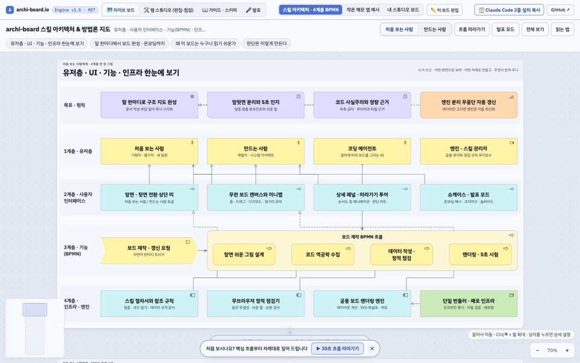
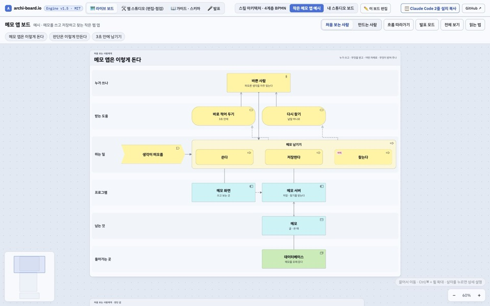
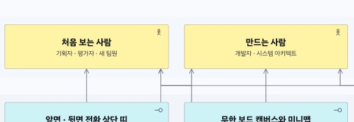
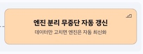
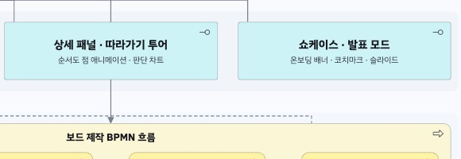

archi-board
코드와 문서를 읽어 아키텍처 보드 한 장을 그리는 Claude Code 스킬
멘토링을 받으며 소프트웨어 공학에 대해서 공부하고 시스템을 기획할려고 할때 어떤 기법으로 공부를 했고 작업을 위해서 시각화된 자료를 만드는 방법을 클로드 스킬로 만들어본 과정이다

한눈에
- 무엇
- 프로젝트를 읽어 그리는 무한 보드 한 장
- 언제
- 2026.10 – 11
- 내 몫
- 혼자. 엔진 · 스킬 · 예시 보드
- 결과물
- 공개 스킬 (MIT) · 예시 보드 · 엔진 1.6
- 상태
- 공개함
- 1
- 장프로젝트 하나에 보드 한 장
- 2
- 면처음 보는 사람 · 만드는 사람
- 4
- 층사용자 · 화면 · 기능 · 인프라
- 1.6
- 엔진 버전보드 데이터와 따로 올라감
만든 것


가까이 본 보드



직접 열어 보기
누구나 열어 볼 수 있는 주소만 놓았습니다.
- 예시 보드gamercross.github.io/archi-board
- 저장소github.com/gamercross/archi-board · MIT
- 수업 발표 덱AI 시대, 무엇을 믿고 만들까
함께
혼자 만들었고, 누구나 쓸 수 있게 MIT 라이선스로 공개했습니다.
다음 작품, Floe
AI에게 코드를 맡기는 사람이 끝까지 만들게 돕는 데스크톱 앱